Barracuda PoseNet Tutorial Pt. 6 (Outdated)
Version 2: Part 1
Last Updated: Nov 30, 2020
Previous: Part 5
Introduction
In this post, we’ll add some connecting lines between the key points to create a simple skeleton. This will improve visibility over the key point objects alone.
Create DrawSkeleton Script
We’ll complete our pose skeleton by drawing lines connecting the appropriate key points. Create a new C# script and name it DrawSkeleton.
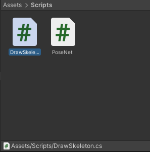
Create keypoints Variable
We need to access the key point objects so make another public GameObject array just like in the PoseNet script.
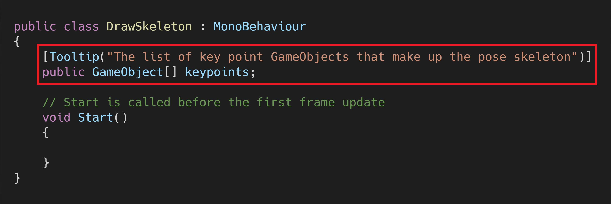
Create lines Variable
Next, create a private GameObject array to hold the lines themselves. Name the variable lines.
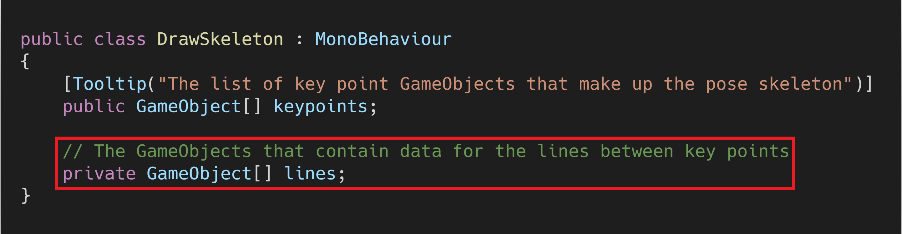
Create lineRenderers Variable
We’ll use LineRenderer components to draw the skeleton.

Create jointPairs Variable
The next variable will contain pairs of key point indices. The corresponding key points indicate the start and end points for the skeleton lines.
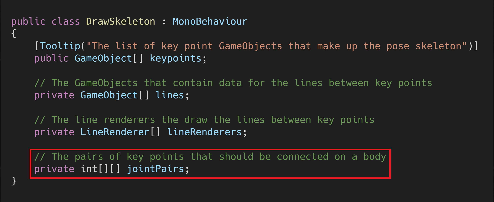
Joint Pairs
| # | Starting Key Point | Ending Key Point |
|---|---|---|
| 1 | Nose | Left Eye |
| 2 | Nose | Right Eye |
| 3 | Left Eye | Left Ear |
| 4 | Right Eye | Right Ear |
| 5 | Left Shoulder | Right Shoulder |
| 6 | Left Shoulder | Left Hip |
| 7 | Right Shoulder | Right Hip |
| 8 | Left Shoulder | Right Hip |
| 9 | Right Shoulder | Left Hip |
| 10 | Left Hip | Right Hip |
| 11 | Left Shoulder | Left Elbow |
| 12 | Left Elbow | Left Wrist |
| 13 | Right Shoulder | Right Elbow |
| 14 | Right Elbow | Right Wrist |
| 15 | Left Hip | Left Knee |
| 16 | Left Knee | Left Ankle |
| 17 | Right Hip | Right Knee |
| 18 | Right Knee | Right Ankle |
Create lineWidth Variable
The last variable we’ll make defines the line width.
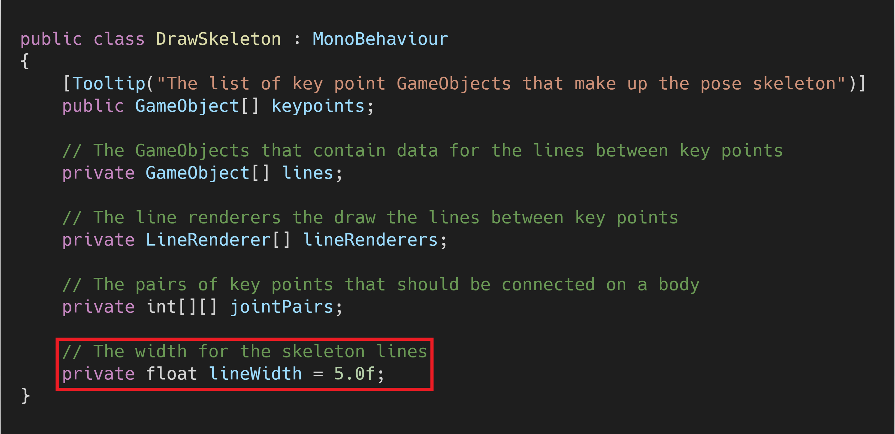
Initialize Variables
We need to initialize the lines, lineRenderers, and jointPairs variables in the Start() method.

Create InitializeLine() Method
We’ll create a new method to set up each of the lines in the pose skeleton. The method will create an empty GameObject for a line and add a LineRenderer component to it. We won’t set the start and end positions as none of the key points will have updated yet.
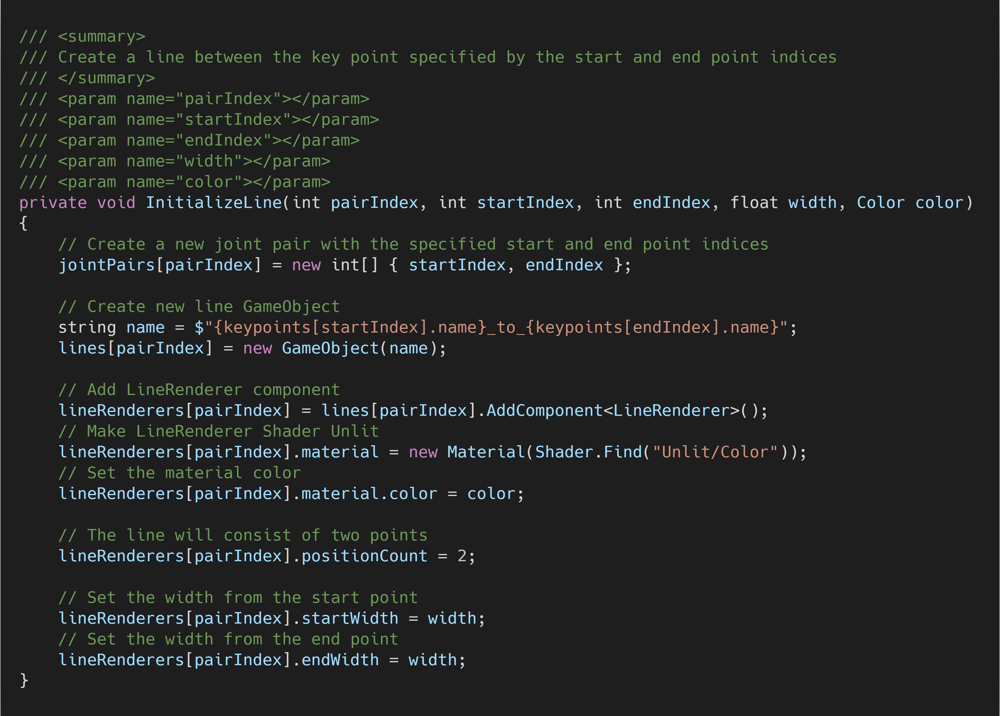
Create InitializeSkeleton() Method
Next, we need to call InitializeLine() in a new method for each line in the pose skeleton. We’ll give each region of the skeleton a different color.
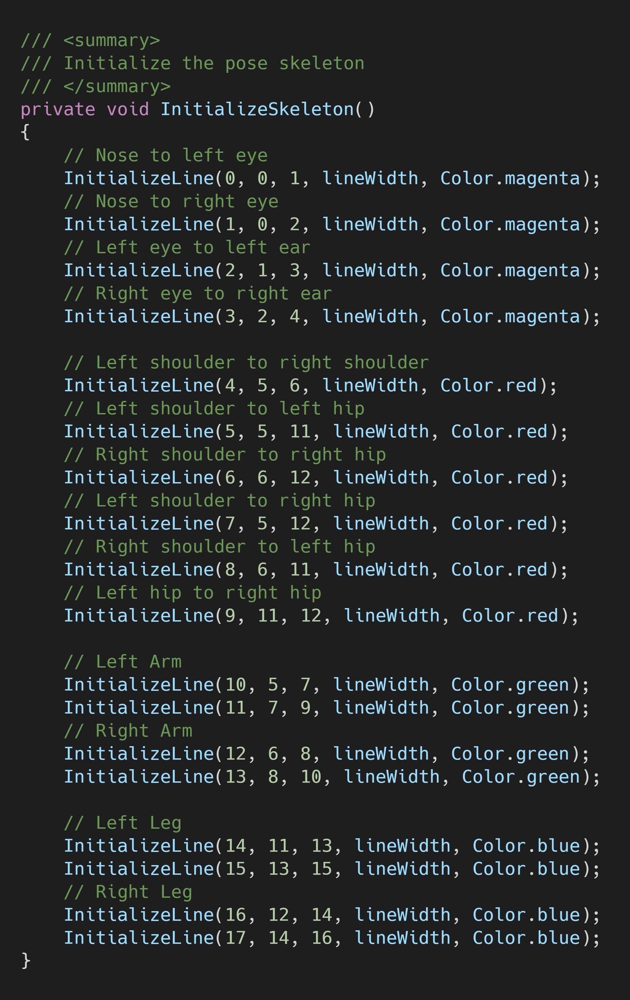
Call the method
We’ll initialize the pose skeleton lines in the Start() method.
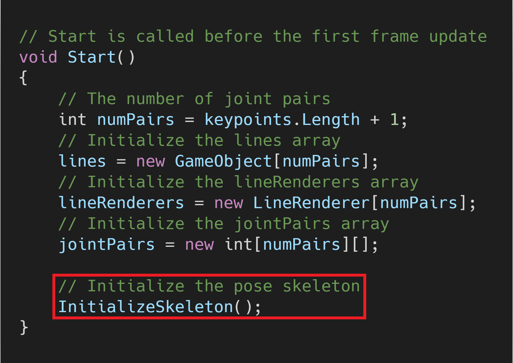
Create RenderSkeleton() Method
The last method we need to define will handle updating the position of the each of the lines in the pose skeleton. The method will iterate through each of the joint pairs and update the start and end positions for the associated LineRenderer. We’ll only display a given line if both of the key point objects are currently active.
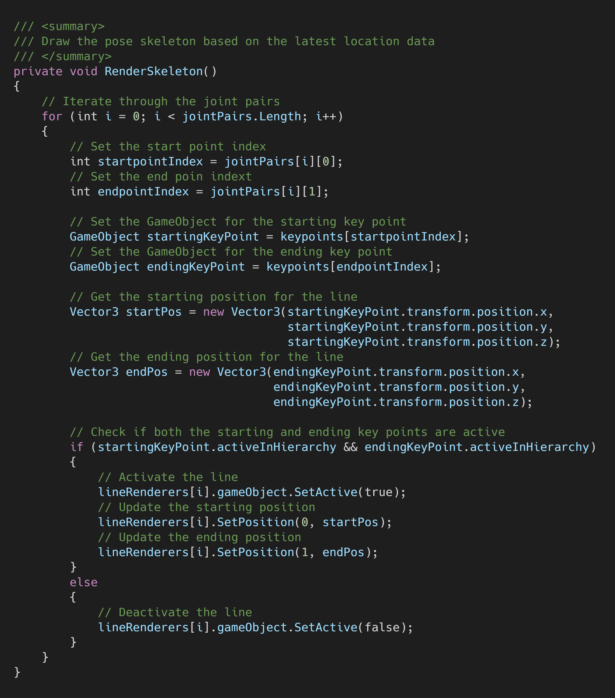
Call the method
We’ll render the skeleton lines in the LateUpdate() method instead of Update(). This will ensure the PoseNet model has run for the latest frame before updating the pose skeleton.
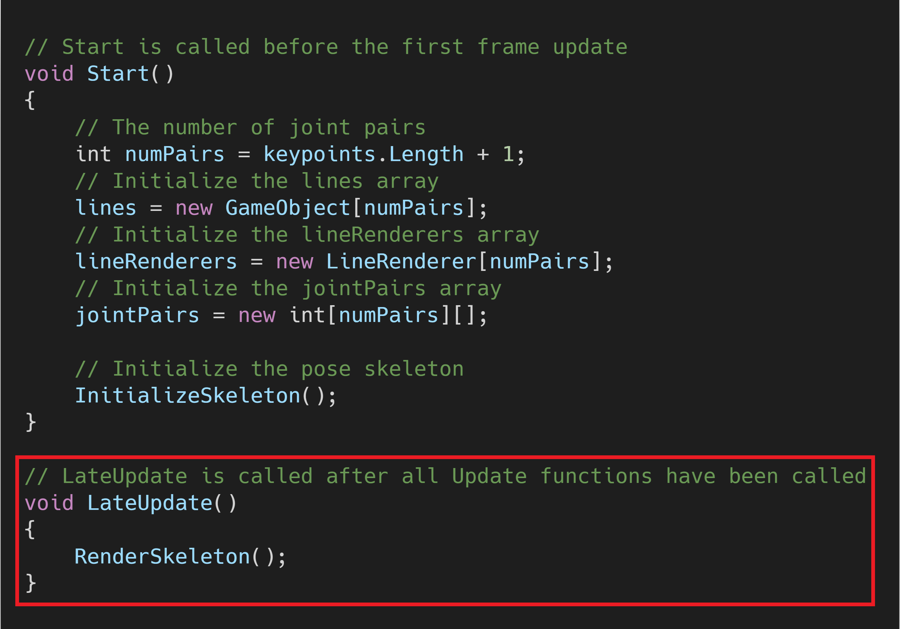
Create SkeletonRenderer
We’ll attach the DrawSkeleton script to a new GameObject. Create an empty GameObject in the Hierarchy tab and name it SkeletonRenderer.
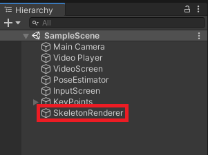
Attach the DrawSkeleton Script
With SkeletonRenderer selected in the Hierarchy, drag and drop the DrawSkeleton script into the Inspector tab.
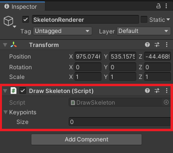
Assign Key Points
Drag and drop the key point objects onto the Keypoints parameter just like with the PoseNet script.
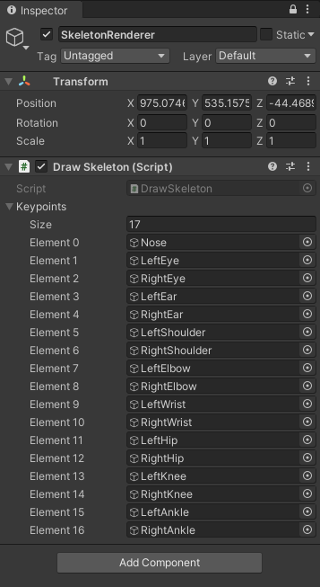
Try It Out
If you press the play button, you should see something like this.
| Variable | Value |
|---|---|
imageHeight |
720 |
imageWidth |
720 |
minConfidence |
85 |
Summary
We now have a complete pose skeleton that we can use for debugging or demos. In the next post, we’ll add the option to use a live webcam feed as input instead of a prerecorded video.